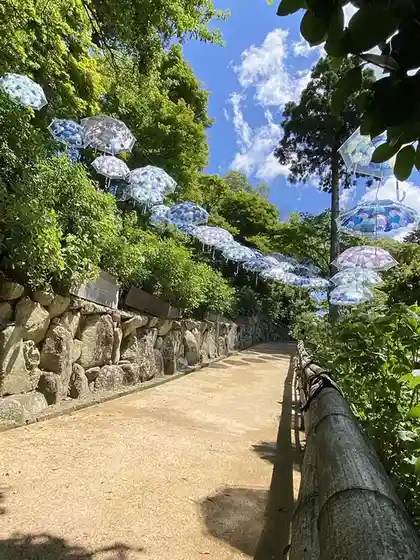
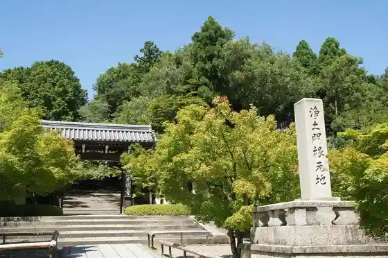
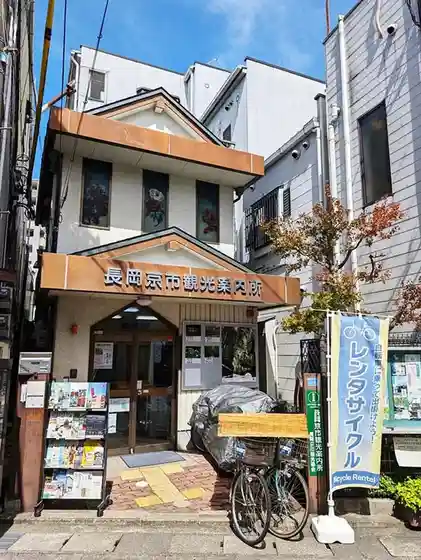

Shoryu Tera Castle Ruins (Shoryu Tera Shiro Park)
Nagaokakyo, Kyoto · 075-955-9716 · Official / source link
Yanagitani Kannon (Yo Tani Tera)
Nagaokakyo, Kyoto · 075-956-0017 · Official / source link

Komyo Tera (Nagaokakyo)
Nagaokakyo, Kyoto · 075-955-0002 · Official / source link

Kaori Shinise Shoei Do Nagaokakyo Kaori Ba
Nagaokakyo, Kyoto · 075-955-0101 · Official / source link
Nagaokakyo Tourism Association
Nagaokakyo, Kyoto · 075-951-4500 · Official / source link

Otokuni Tera
Nagaokakyo, Kyoto · 075-951-5759 · Official / source link
Santorii (Tennensui no Biiru Kojo) Kyoto
Nagaokakyo, Kyoto · 075-952-2020 · Official / source link
Nagaokakyo Tategami Ashi Fureai Town Ie (Kyu Ishida Ie House)
Nagaokakyo, Kyoto · 075-951-5175 · Official / source link
Kyotofu Nagaokakyo Kinen Culture Hall
Nagaokakyo, Kyoto · 075-955-5711 · Official / source link
Nagaokakyo Fureai Asa City Yu City
Nagaokakyo, Kyoto · 075-955-9514 · Official / source link
Yanagitani Kannon Tokko Mizu
Nagaokakyo, Kyoto · 075-956-0017 · Official / source link
Shoryu Tera
Nagaokakyo, Kyoto · 075-951-6906 · Official / source link
Nagaoka Tenmangu Shrine
Nagaokakyo, Kyoto · 075-951-1025 · Official / source link
Cho Ho Tera
Nagaokakyo, Kyoto · 075-951-9075 · Official / source link
Igenoyama Kofun Park
Nagaokakyo, Kyoto · 075-954-3557 · Official / source link
Shop&Gallery Takeo Sono
Nagaokakyo, Kyoto · 075-925-5673 · Official / source link
Nagaokakyo Ritsu Maizo Bunkazai Chosa Center
Nagaokakyo, Kyoto · 075-955-3622 · Official / source link
Nagaokakyo Ritchu Yama Shuichi Memorial Museum
Nagaokakyo, Kyoto · 075-957-7176 · Official / source link